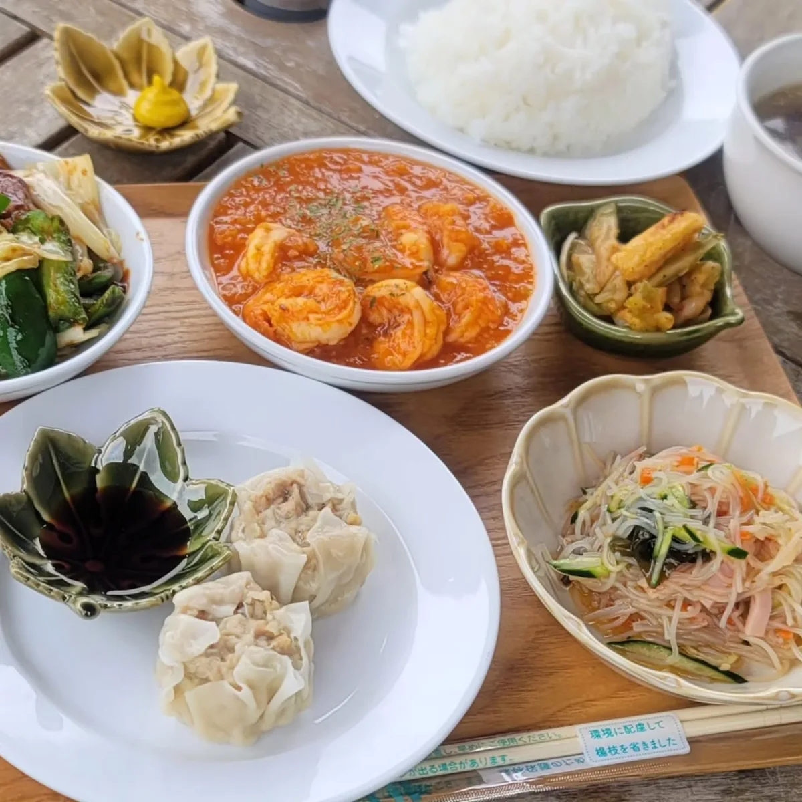
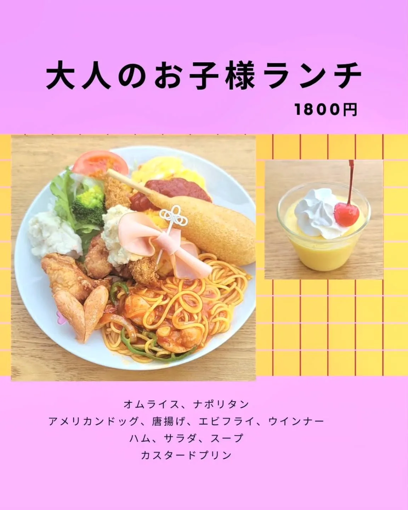
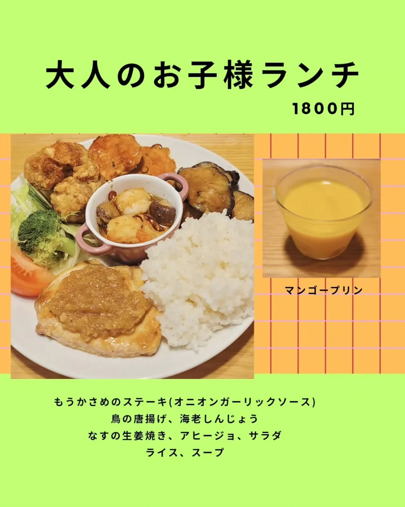

EXPLORE UMIKAZE
HOME/FOOD & DRINK
FOOD & DRINK
しっかりごはんも、気軽なひと休みも。その日の気分で、ゆっくりお楽しみください。
WEEKLY SPECIALS
和・洋・中、いろいろなおいしさを手作りで。下の写真は、過去のメニューからのご紹介です。

CHINESE PLATE
エビチリ、回鍋肉、焼売に、彩りのある小鉢を添えて。

A LITTLE NOSTALGIA
オムライスやナポリタン。懐かしいおいしさを、ひと皿に。

SEASONAL FAVORITES
お魚や唐揚げ、野菜のおかずを少しずつ楽しむランチ。
お料理の内容・価格は週ごとや仕入れによって変わります。現在のメニューはInstagramをご確認ください。
CAFE TIME
お食事と一緒に。お散歩のあとの一杯に。
コーヒー・紅茶・コーラオレンジジュース・ウーロン茶ストロベリーシェイク・バナナシェイク海風クリームソーダ
生ビール・レモンサワーお茶ハイ・ハイボール今週のカクテル
ホットサンド、ホットドッグ、唐揚げ、ポテトフライなど。気軽につまめるお料理もご用意しています。
愛犬のための手作りメニューもございます。当日の内容はスタッフへお声がけください。
雨の日はテイクアウトの営業も行っておりません。最新の営業状況はInstagram、またはお電話でご確認ください。
TODAY AT UMIKAZE
本日の営業時間、今週のメニュー、イベントのお知らせを投稿しています。ご来店前に、ストーリーズもご確認ください。
@umikaze_mametenchotto